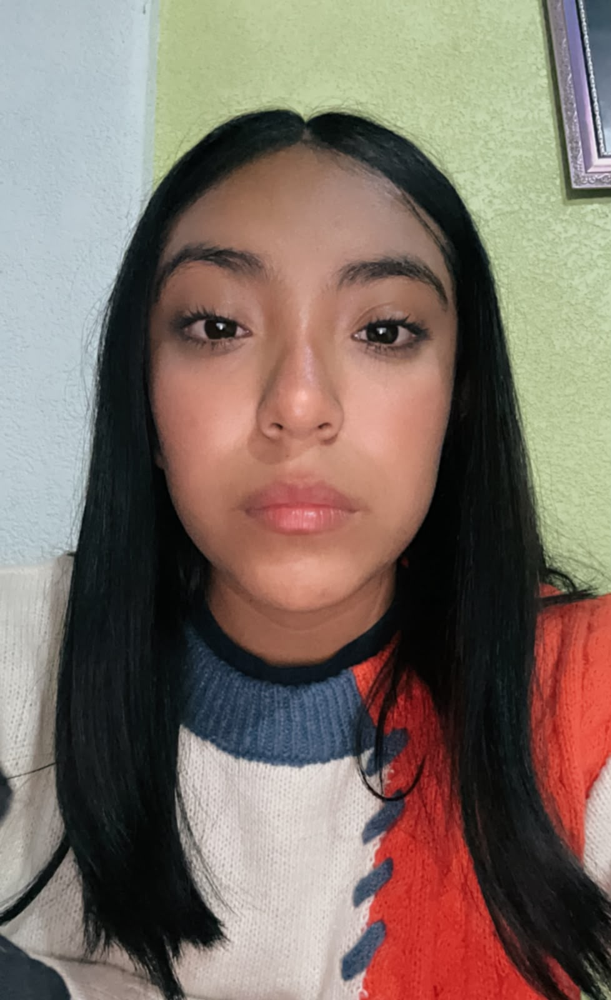

|
 |
Bustamante Millan America JolleteEstudiante de Ingeniería en Tecnologías de la Información e Innovación |
PERFILEstudiante de la Licenciatura en Ingeniería en Tecnologías de la Información e Innovación, con interés en el desarrollo de aplicaciones y páginas web. Durante mi formación académica he desarrollado diferentes proyectos, trabajando con tecnologías como HTML, CSS, JavaScript y bases de datos. He participado en la creación de páginas y proyectos como ATableT y PetCare, desarrollando gran parte de su estructura y funcionalidad. Me interesa seguir adquiriendo conocimientos y mejorar mis habilidades en el área de tecnologías de la información.CONTACTO
Correo Electrónico: millanjollete@gmail.com
|
EducaciónEscuela SecundariaEscuela Secundaria Valentín Gómez Farías No. 58Ubicación: Ciudad de México, México Periodo: 2014 - 2018 Título obtenido: Certificado de Secundaria Actividades relevantes: Participación en el Club de Lectura y representante estudiantil en eventos académicos. Escuela PreparatoriaEscuela Preparatoria Oficial No. 18Ubicación: Ciudad de México, México Periodo: 2018 - 2021 Título obtenido: Certificado de Bachillerato Actividades relevantes: Participación en programas de voluntariado comunitario. Proyectos AcadémicosATableT - Proyecto de desarrollo webProyecto académico. Desarrollo de una página web enfocada en una tienda de tablets. Participación en la creación de la estructura y contenido de la página, trabajando con HTML, CSS y JavaScript.PetCare - Proyecto de desarrollo webProyecto académico. Desarrollo de una página web relacionada con la adopción de perros. Participación en la creación de diferentes secciones de la página y en el desarrollo de su estructura y funcionalidades. |